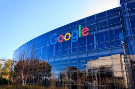

Apa itu Google?

Jadi apa itu Google? Menurut buku memanfaatkan Fitur-fitur Google
karya Atriyon Julzarika dan I Made Andi (2013) pengertian Google
adalah perusahaan mesin pencari yang didirka pada tahun 1998 oleh
Sergey Brin dan Larry Page. Saat ini kantor utama Google ada di
Montain View, California. Ada leih dari 70% permintaan pencarian
online di seluruh dunia telah ditangani oleh Google.
Mesin pencari Google dapat dikatakan sebagai situs yang paling
sukses dan popular. Apalagi ditambah dengan banyaknya layanan dan
produk online yang bisa digunakan, seperti akun email, browser web,
perangkat lunak produktivitas, ponsel dan aplikasi, alat pemetaan,
e-book, iklan internet, serta berbagai video dan situs jejaring
sosial lainnya.
Misi utama dari Google sendiri adalah untuk mengumpulkan informasi
dunia dan membuatnya dapat diakses dan bermanfaaat oleh semua orang.
Awalnya, Google diberi nama BackRub karena menggunakan sistem
memeriksa backlink untuk memperkirakan pentingnya sebuah situs.
Sejarah berdirinya Google tidak terlepas dari dua sosok besar, Yitu
Larry Page dan Sergey Brin. Gogle didirikan di tahun 1998 saat
mereka masih menjadi mahasiswa di Standford University.
Saat ini, Google dinaungi oleh sebuah perusahaan holding Bernama
Alphabet uang dibentuk sendiri oleh Google. Nah, sebenarnya
bagaimana sejarah berdirinya Google yang saat ini menjadi salah satu
perusahaan teknologi terbesar di dunia?
Sejarah berdirinya Google

Google sendiri didirikan oleh Larry Page dan Sergey Brin saat masih
menjadi Mahasiswa di Universitas Stanford. Mereka berdua memegang 16
peren saham perusahaan. Mereka menjadikan Google sebagai perusahaan
swasta pada tanggal 4 September 1998.
Pernyataan misinya adalah “mengumpulkan informasi dunia dan
bermanfaat oleh semua orang”, dan sloga tidak resminya adalah “Don't
be evil”. Pada tahun 2006, kantor pusat Google pindah ke Mountain
View, California yang sebelumnnya berada di sebuah garasi kecil yang
berada di San Mateo, California.
Awalnya, kedua orang hebat ini lahir dari keluarga tidak main-main,
boleh dikatakan terpandang. Ayah dari Larry merupakan professor ilmu
computer di Universitas Michigan dan juga seorang programmer.
Larry sendiri sudah tertarik di dunia komputer dan sains sejak masih
berusia 6 tahun dan itupun lantaran di rumah banyaj buku-buku
computer milik sang ayah. Bakatnya terus ia tekunin hingga duduk di
bangku kuliah. Hingga akhirnya Larry mendapatka gelar Bachelor of
Science pada bidang rekayasa komputer dari University of Michigan
pasca lulus dari East Lansing High School.
Sementara, Sergey merupakan pengusaha asal di Amerika Serikat yang
mempelajari mengenai ilmu computer dan matematika.
Awal berdiri, Google beruntung mendapat suntikan dana senilai USD100
ribu atau setara dengan Rp1,3 miliar dari Co-founder Sun Andy
Betcholsheim. Keduanya juga mendapat kantor pertama berupa sebuah
garasi milik Susan Wojcicki, sosok yang kini menjadi CEO Youtube.
Mulai saat itu, Google mempekerjakan tim sales, sejak saat itu
proyek ini semakin berkembang pesat. Hal inilah yang memaksa Google
kemudian pindah ke The GooglePlex di Mountain View, California,
Amerika Serikat.
Siapa sangka perjalanan Google dimulai dari sebuah garasi, bisa
dibayangkan kesuksesan yang dicapai kedua orang ini melewati jalan
yang berliku-liku.
Fungsi Google
Adapun beberapa fungsi Google antara lain sebagai berikut.
- Sebagai
pengingat karena Google menyediakan fitur reminder khusus yang dapat
diaktifkan melalui perintah suara atau membukanya langsung dari
aplikasi.
- Cuaca adalah fitur yang sudah sejak lama ada di apliksi
Google Search dan masih terus diperbaharui hingga kini untuk
mendapatkan pengalaman pengguna yang lebih baik.
- Berita adalah fitur yang dapat dinikmati oleh setiap pengguna untuk mendapatkan
bertia actual di laman depan.
Itulah pengertian, fungsi dan sejarah
dari google yang saat ini menjadi search engine terbesar. Dari yang
awalnya search engine yang biasa saja menjadi search engine yang
luar biasa, hal tersebut bisa dibuktikan oleh kita sendiri yang
selalu bertanya atau mencari jawaban dari persoalan yang kita alami
dengan mengakatakan “OK Google” atau dengan mengetik kata kunci
untuk mendapatkan jawaban dari persoalan yang kita alami.
Google Doodle
Google Doodle pertama kali diciptakan pada 1998, Ketika Larry Page
dan Sergey Brin berliur ke Burning Man Festival. Saat itu, Doodle
yang diciptakan sederhana, dengan stic man ikonik yang berada di belakang
huruf O. Tidak lama setelah Larry dan Serget memposting Google Doodle pertama,
Seniman freelance mulai mengerjakan yang kain. Terkadang, kreatormenambahkan
dekorasi hari libur sederhana pada logo.
Ketika Dennis Hwang memimpin doodler
pada 2000, desain berkembang menjadi tambahan yang lebih kreatif. Google Doodles
menjadi sangat popular pada tahun itu sehingga Sergrey Brin memutuskan untuk
mengajukan paten untuk mereka. Paten berjudul Sistem dan metode untuk menarik
pengguna untuk mengakses situs web
.
Paten dirancang untuk melindungi praktik Google meningkatkan logo mereka untuk
tanggal dan acara khusus. Itu disetujui hamper 10 tahun kemudian, pada tahun 2011.
Dennis Hwang adalah satu-satunya pembuat coretan (doodler) selama bertahun-tahun,
tetapi hari ini diciptakan oleh tim pembuat coretan khusus dan insinyur yang latar
belakangya berkisar dari animasi film hingga desain buku komik.
Tim Google Doodle mendapat ribuan permintaan dari pengguna setiap tahun,
tetapi hanya beberapa ratus yang berhasil masuk ke beranda.
Prakasai Pengembangan Android
Google sejak didirikan, pertumbuhan perusahaan yang cepat telah menghasilkan berbagai produk,
akuisisi, dan kerja sama di bidang mesin pencari inti Google. Perusahaan ini menawarkan
perangkat lunak produktivitas daring (dalam jaringan), termasuk surat elektronik (surel),
paket aplikasi perkantoran, dan jejaring sosial. Produk-produk komputer mejanya meliputi
aplikasi untuk menjelajah web, mengatur dan menyunting foto, dan pesan instan.
Perusahaan ini memprakarsai pengembangan sistem operasi Android untuk telepon genggam dan
Google Chrome OS untuk jajaran netbook Chromebook. Google sudah beralih ke perangkat keras
komunikasi. Mereka bekerja sama dengan berbagai produsen elektronik besar untuk memproduksi
perangkat Nexus-nya dan mengakuisisi Motorola Mobility pada Mei 2012. Tahun 2012, infrastruktur
serat optik dipasang di Kansas untuk memfasilitasi layanan Internet pita lebar Google Fiber.
Perusahaan ini diperkirakan mengoperasikan lebih dari satu juta server di beberapa pusat data
di seluruh dunia dan memproses lebih dari satu miliar kueri pencarian dan sekitar 24 petabita
data buatan pengguna setiap harinya. Pada bulan Desember 2012, Alexa menyebut google.com sebagai
situs web paling banyak dikunjungi di dunia. Situs-situs Google dalam bahasa lain masuk peringkat
100 teratas, sebagaimana halnya situs milik Google seperti YouTube dan Blogger.
Google menempati peringkat kedua di basis data ekuitas merek BrandZ. Dominasi pasarnya menuai
kritik mengenai hak cipta, penyensoran, dan privasi. Pada tahun 2014, Google juga mendapat
penghargaaan dari Business Indeed sebagai perusahaan yang memiliki merk paling bernilai.
Pada 10 Agustus 2015, Google melalui postingan blog, CEO Google Larry Page mengumumkan pembentukan
perusahan baru bernama Alphabet yang akan menjadi perusahaan induk mencakupi Google dan usaha-usaha
lain yang tak terlalu terkait erat dengan bisnis utama Google. Pada restrukturisasi tersebut,
Larry Page akan menjadi CEO perusahaan baru Alphabet. Sergey Brin menjabat sebagai President didampingi
Erich Schmidt sebagai Executive Chairman. Sedangkan, CEO Google dijabat oleh Sundar Pichai.